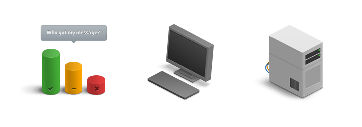

In critical situations, mistakes can be costly.
We worked hard to create an interface that's fast and easy to use.
We created a consistent visual language that could be rolled out across the web app, mobile apps and product marketing.

We worked closely with Whispir's software developers to get the new interface live before fire season.

We meet twice each week to review the latest design work and plan priorities for the next iteration of our work.
Shared Trello taskboards help us co-ordinate our design work with the development team's agile build process.
Learn more about how we work with developers.